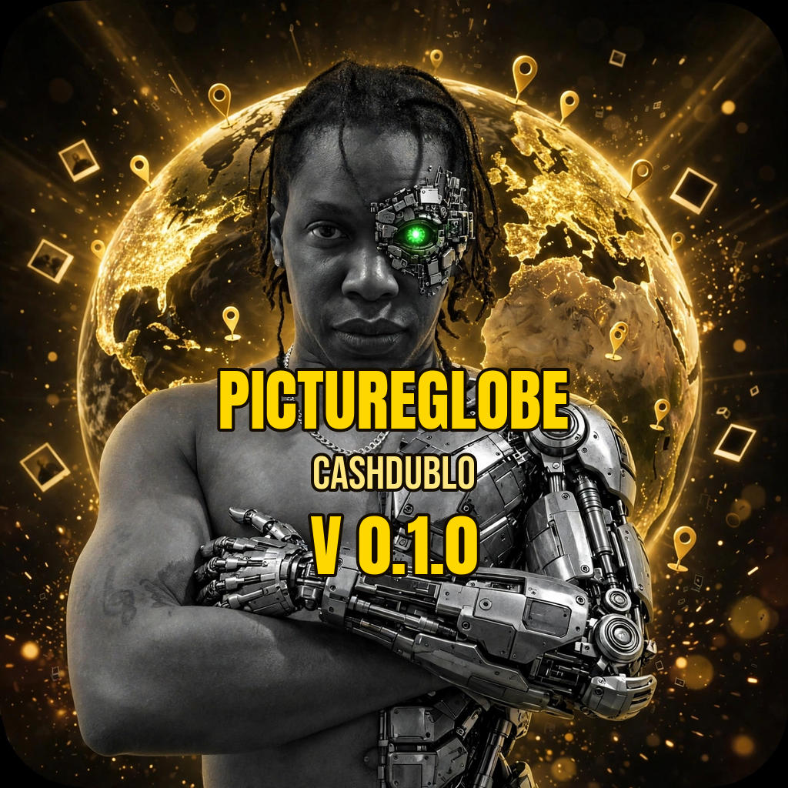

← All apps

PictureGlobe
SOURCE: ANDROID 0.1.0Your photos, on a globe. PictureGlobe reads your phone gallery — only with your permission — and puts every photo that carries a place onto a spinning globe as a pin.
What it does
- Photos without a place are never given a made-up one — they live on shelves by folder and by date, one tap from the same home screen
- Search finds photos by place name, by date, or by folder
- Marvin lives in the app: he tells jokes from a written deck, comments on the photo you are looking at using only its real facts, and listens while you record a voice story that stays with that photo — he has 40 named expressions
- Hide a photo with one tap and it is out everywhere: not on the globe, not in search, not on the shelves, not in any backup
- Long-press any photo for its full sheet: Share, Record a message, Hide it, Remove the photo — removing uses the phone's own delete and its own confirmation
- Backup: checked-in photos sealed into one encrypted archive locked with a password you set — the password is never stored — and a 12-digit code gates starting an upload or an export
- Wi-Fi transfer: the phone serves one small page on your home Wi-Fi and any computer browser downloads the archive, with nothing installed
- Everything works offline; the globe is built on the phone
Why have it
years of travel photos become a globe you can spin, search and hear stories over — and the private ones stay private with one tap.
Version 0.1.0 · Android